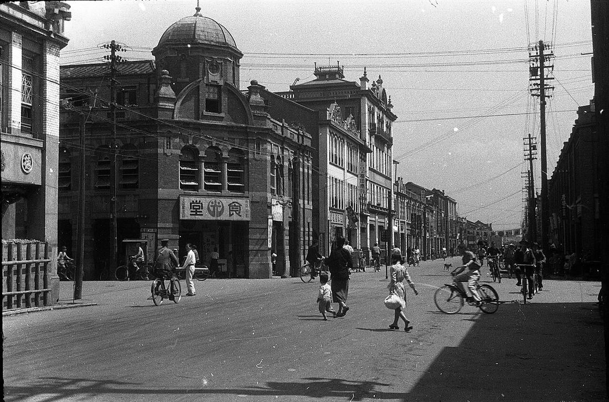
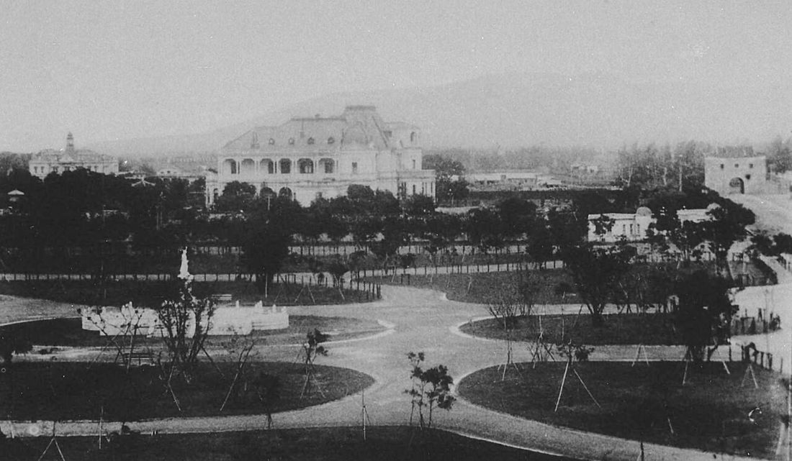
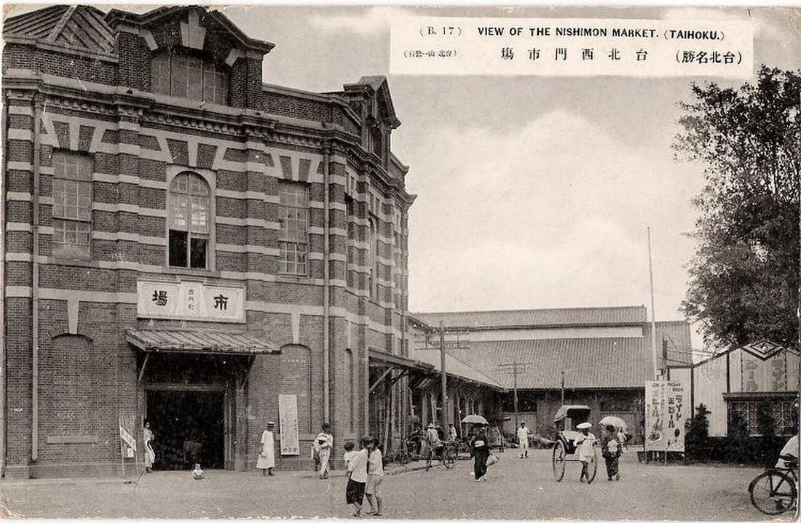
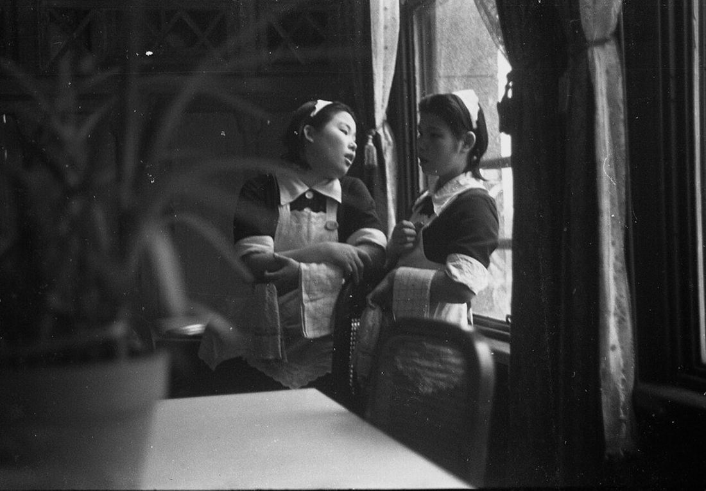
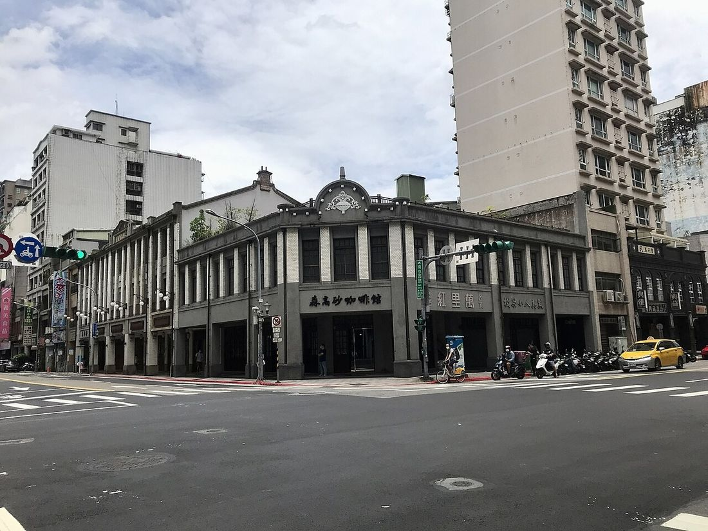

台北老店．大稻埕與城中
台北第一家咖啡館，到底是哪家？
台北第一家咖啡館是哪一家？答案其實不只一個。

網路上常看到「台灣第一家咖啡館」，但年份、店名、地點，每篇都寫得不太一樣。我們把幾個來源排在一起看，用目前可查的保守說法，整理給你。
先有咖啡，才有咖啡館
一八九〇年代末，台北的西餐廳就開始賣咖啡。一九〇八年前後，西門紅樓一帶出現了一家咖啡豆專賣店。
最常被說是第一家的那間
開在台北新公園，也就是今天的二二八公園。有報導叫它「獅子」，年份有人寫一九一一、也有人寫一九一二。那時候能坐進咖啡館的，多半是有錢人和文人。
台灣人自己開的第一家
一九三一年，楊承基在大稻埕開了「維特」，他是畫家楊三郎的哥哥。原址在延平北路和南京西路口，現在還是一家咖啡館。
專業點：珈琲和喫茶店不一樣
日治時期，招牌寫「珈琲」的店常常賣酒，還有女給陪聊；只賣咖啡、不賣酒的，才叫「喫茶店」。所以老照片裡的咖啡店，不一定是你想像的那種咖啡館。
老照片與街景




店家資訊
- 店家
- 維特咖啡原址
- 地點
- 延平北路二段與南京西路口
- 現況
- 出發前先確認
- 營業時間
- 常有變動，出發前請再確認
- IG 影片
- 12/1 上片
你覺得「第一家」該怎麼算？最早賣咖啡的、還是最早叫咖啡館的？留言告訴我們
到 IG 留言告訴我們
到 IG 留言告訴我們